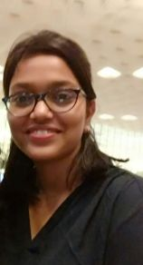

About Me
I am a Masters student in the Computer Science Department of Stony Brook University. I am interested in systems research and prior to joining
Stony Brook University, I was working in systems and storage domain for 4 years. I am doing my advanced project under the guidance of
Prof. Erez Zadok in File Systems and Storage Lab
(FSL).
Education
- M.S. in Computer Science, Stony Brook University, August 2016 - Present
- B.E. in Computer Engineering, Sardar Patel Institute of Technology (University of Mumbai), August 2008 - May 2012
Industry Experience
Toshiba Software India Pvt. Ltd., Storage R&D
Senior Software Engineer, January 2014 - July 2016
NVMe SSD Management Software
- Designed Host Side Management Stack for PCIe SSD drives
- Implemented complete CLI Framework
- Designed and implemented commands based on NVMe protocol for managing our drives
- Designed CIM classes to allow managing our drives through WBEM infrastructure
- Developed indication providers to monitor SMART thresholds and drive events
- Developed indication consumers to log all received indications on Linux and Windows host
NVMe SSD Firmware
- Designed UART driver to allow console access
- Designed and developed background monitoring functionality
Marvell Semiconductors Inc., Storage R&D
Associate Software Engineer, July 2012 - January 2014
DragonFly - PCIe based caching solution
Host Storage Stack
- Proposed a design for platform independent CLI, implemented and handled ownership of the same
- Worked on entire Host Storage Stack - user space to kernel (Linux) while implementing commands to configure and manage PCIe based
caching card
- Implemented timer based process monitoring mechanism in shell script
Windows Specific
- Ported the user space management stack to Windows
- Worked on Block Filter driver to export I/O statistics to PerfMon through Kernel Mode Performance Counters
- Developed system report using PowerShell
- Enhanced Windows Service
Graduate Courses
- CSE 502 Computer Architecture (Spring 2017)
- CSE 590 Parallel Programming Models and Their Implementation (Spring 2017)
- CSE 592 New Human Factors in Computing (Spring 2017)
- CSE 504 Compiler Design (Fall 2016)
- CSE 506 Operating Systems (Fall 2016)
- CSE 548 Analysis of Algorithms (Fall 2016)
- CSE 549 Computational Biology (Fall 2016)
Academic Projects
- E-- compiler
Developed a compiler for the E-- language using flex, bison and C++.
- Mergesort system call
Developed a Linux kernel module to support a new system call which merge sorts input files and writes sorted records to output file.
- Trfs (stackable file system with operation-tracing support)
Developed a new file system - trfs to capture records of file system activity. These records are written to a file on disk which is
later used by a user-land program to replay the traced operations.
- Linux kernel-based system to support per process system call vectors
Modified Linux kernel and developed new system call vector modules to support system calls on a per process basis.
Resume
Please email me for a copy.